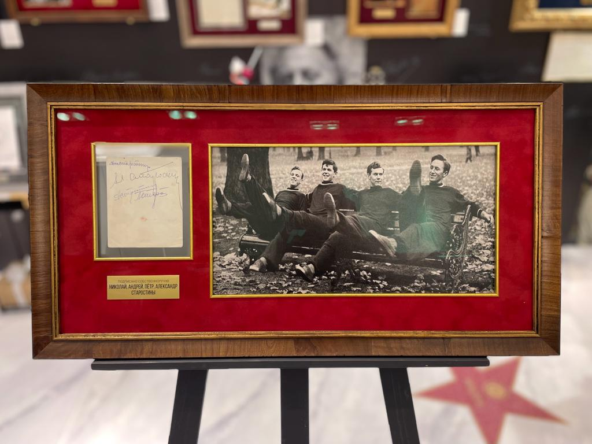
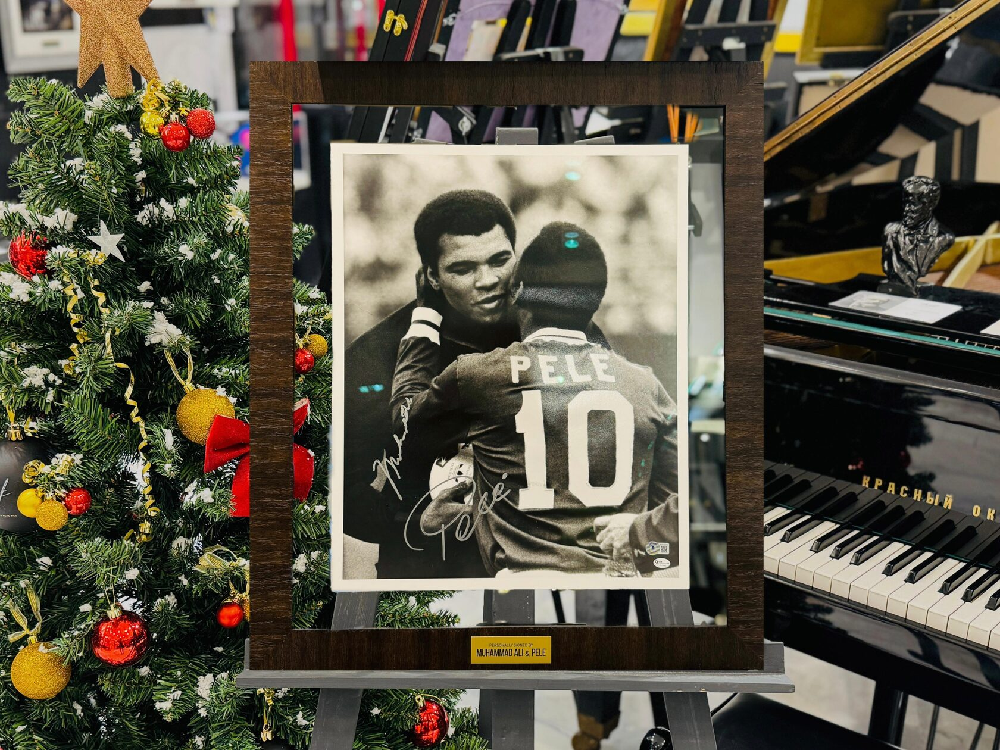
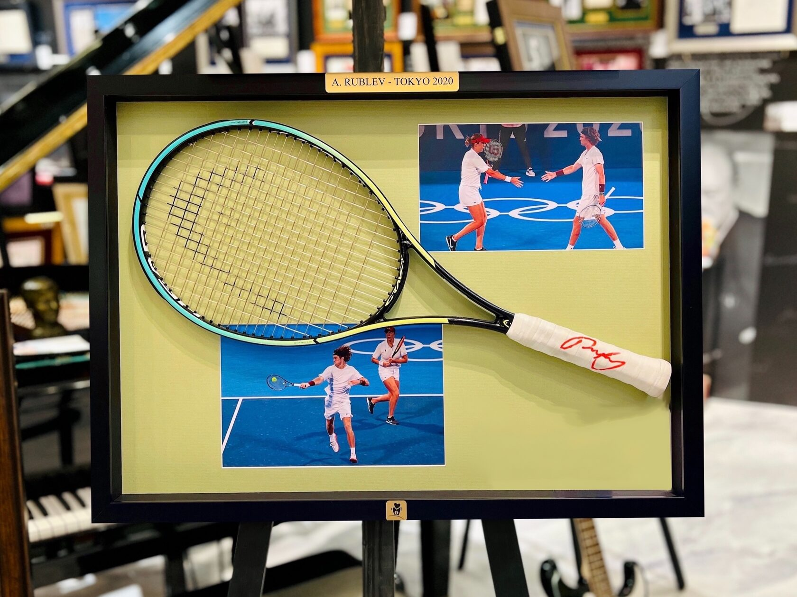
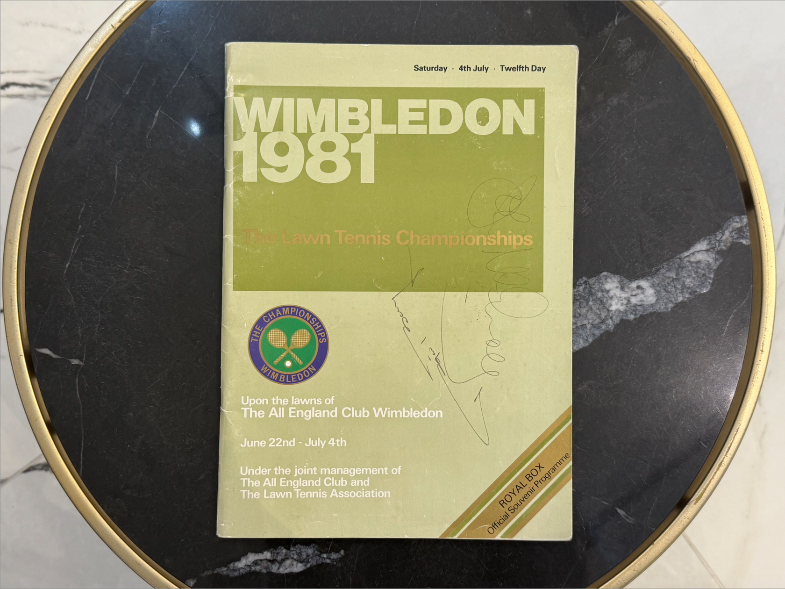
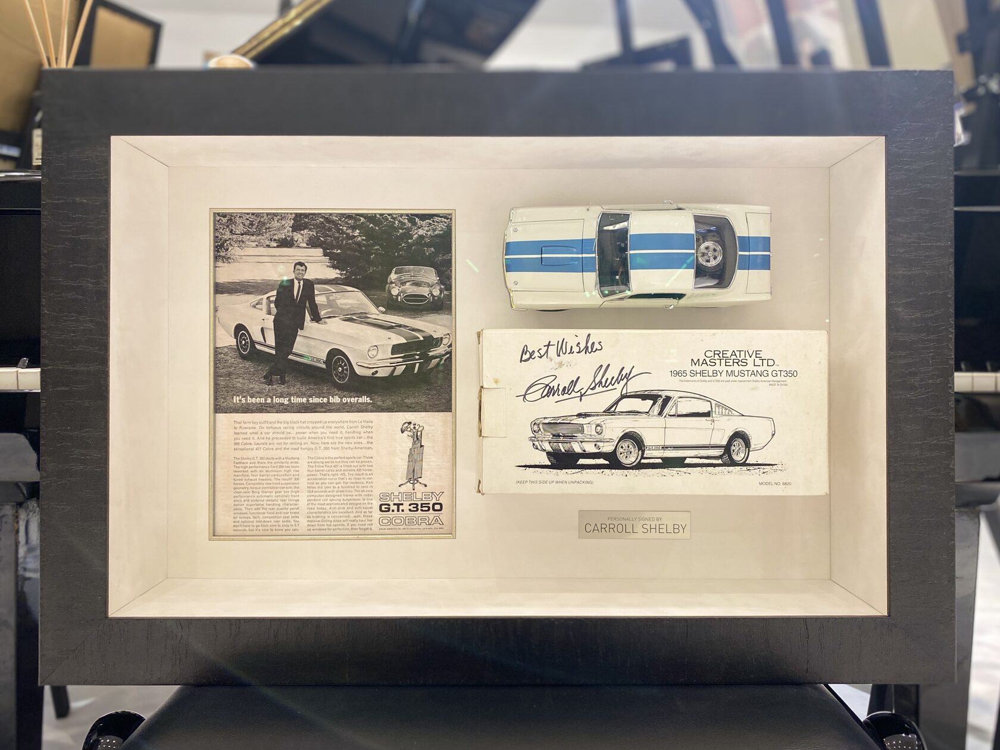

Stargift · Спорт
Большой спорт
Тридцать семь предметов из коллекции Stargift: футбол, хоккей, бокс, теннис, «Формула-1», баскетбол и шахматы. За каждым — конкретный матч, гонка или партия.
Июль 2026

Футбол
Лев Яшин и сборная СССР — программа чемпионата мира 1966 года
Программа чемпионата мира по футболу с автографами сборной СССР и билет на первый матч турнира Англия — Уругвай. Англия, 1966 год. Лев Яшин — лучший вратарь XX века по версиям авторитетных спортивных изданий; Валерия Воронина королева Елизавета II назвала «самым элегантным футболистом на поле».
2 000 000 ₽

Диего Марадона — футболка сборной Аргентины
Футболка сборной Аргентины с рукописным пожеланием и автографом. Диего Марадона выступал за «Архентинос Хуниорс», «Бока Хуниорс», «Барселону», «Наполи» и сборную Аргентины. В 1997 году психолог Густаво Бернстайн писал о нём: «Аргентина — это Марадона, Марадона — это Аргентина».
1 850 000 ₽

Лионель Месси — именное подписание майки
Игровая майка ФК «ПСЖ» или сборной Аргентины с именным обращением, пожеланием и автографом; процесс подписания фиксируется на фото. Месси официально подписывает 20–30 именных маек в год. Чемпион мира, лучший бомбардир в истории «Барселоны» и сборной Аргентины.
1 500 000 ₽

Николай, Андрей, Пётр и Александр Старостины — фото
Фото с четырьмя автографами. Братья Старостины — основатели «Спартака»: в 1935 году название обществу предложил Николай Старостин в честь книги Рафаэлло Джованьоли о предводителе восставших римских рабов. Автографы всех четырёх братьев на одной фотографии — крайняя редкость.
1 500 000 ₽

Лионель Месси и Криштиану Роналду — футболки сборных
Футболки сборной Аргентины и сборной Португалии с двумя автографами. Лионель Месси — чемпион мира, лучший бомбардир в истории «Барселоны» и сборной Аргентины. Криштиану Роналду — чемпион Европы, рекордсмен по количеству матчей в еврокубках, капитан сборной Португалии.
1 300 000 ₽
Beckett

Диего Марадона, Гордон Бэнкс, Кафу, Лоран Блан, Диего Форлан, Карлес Пуйоль — мяч
Мяч с автографами. Подписан в рамках финальной жеребьёвки чемпионата мира 2018 года, которая состоялась в Кремле в 2017 году. Среди подписантов — Диего Марадона, двукратный чемпион мира Кафу, чемпион Европы и мира Карлес Пуйоль и чемпион мира 1966 года Гордон Бэнкс.
1 100 000 ₽

Мухаммед Али и Пеле — фото
Фото с двумя автографами, снятое 1 октября 1977 года на прощальном матче Пеле за «Нью-Йорк Космос». На окончание его карьеры пришли посмотреть 77 тысяч зрителей, среди них президент США Джимми Картер, Мик Джаггер и Элтон Джон. Али подтвердил звание чемпиона мира по боксу за два дня до этого.
950 000 ₽

Мухаммед Али — статуэтка
Лимитированная статуэтка с автографом, 365/3500. Мухаммед Али — единственный боксёр, пять раз признанный боксёром года: в 1963, 1972, 1974, 1975 и 1978 годах. За карьеру трижды побывал в нокдауне и ни разу не был нокаутирован.
900 000 ₽

Андрей Рублёв — личная ракетка с Олимпийских игр
Личная ракетка с Олимпийских игр с автографом. Андрей Рублёв — олимпийский чемпион 2020 года в миксте, обладатель Кубка Дэвиса и Кубка ATP 2021 года в составе сборной России. Своим первым кумиром называет Марата Сафина: «Я тогда подумал: вот бы и мне так научиться».
1 100 000 ₽

Новак Джокович, Штеффи Граф и Джон Макинрой — фото
Фотография Всеанглийского клуба лаун-тенниса и крокета с тремя автографами. Джокович — единственный игрок Открытой эры, выигравший и все четыре турнира Большого шлема, и все девять «Мастерсов». Штеффи Граф восемь сезонов завершала первой ракеткой мира, Джон Макинрой — пятикратный обладатель Кубка Дэвиса.
710 000 ₽

Роджер Федерер, Новак Джокович и Рафаэль Надаль — фото
Фото с автографами. Роджер Федерер — 20-кратный победитель турниров Большого шлема и шестикратный победитель Итогового турнира ATP. Новак Джокович — рекордсмен по числу недель на первой строчке рейтинга ATP и первый в истории тенниса по сумме призовых, более 159 млн долларов.
700 000 ₽
JSA — NN71101 · Beckett — BF88766

Джон Макинрой и Бьорн Борг — журнал
Журнал с двумя автографами. Бьорн Борг с 1974 по 1981 год выиграл 11 турниров Большого шлема, включая пять Уимблдонов подряд, и завершил карьеру в 26 лет. У Джона Макинроя 7 титулов Большого шлема в одиночном разряде и 9 в парном; их соперничество стало главным сюжетом тенниса тех лет.
390 000 ₽

Энцо Феррари — брошюра
Брошюра с автографом. Энцо Феррари — конструктор, основатель автомобильной компании и гоночной команды «Феррари». Его команда впервые вышла на старт «Формулы-1» в 1950 году, а уже в следующем сезоне одержала первую победу — её принёс Хосе Фройлан Гонсалес.
1 150 000 ₽

Кэрролл Шелби — мини-модель Ford Shelby Mustang
Мини-модель автомобиля Ford Shelby Mustang с автографом. Кэрролл Шелби — гонщик и конструктор, создатель Shelby Cobra и участник проекта Ford GT40, который в 1966 году принёс Ford первую победу в гонке «24 часа Ле-Мана».
630 000 ₽
Все предметы каталога — из собрания Stargift. По любому лоту доступны дополнительные фотографии и история его появления в коллекции.
stargift.ru